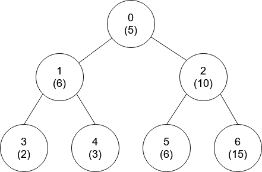

There is a tree (i.e., a connected, undirected graph that has no cycles) consisting of n nodes numbered from 0 to n - 1 and exactly n - 1 edges. Each node has a value associated with it, and the root of the tree is node 0.
To represent this tree, you are given an integer array nums and a 2D array edges. Each nums[i] represents the ith node's value, and each edges[j] = [uj, vj] represents an edge between nodes uj and vj in the tree.
Two values x and y are coprime if gcd(x, y) == 1 where gcd(x, y) is the greatest common divisor of x and y.
An ancestor of a node i is any other node on the shortest path from node i to the root. A node is not considered an ancestor of itself.
Return an array ans of size n, where ans[i] is the closest ancestor to node i such that nums[i] and nums[ans[i]] are coprime, or -1 if there is no such ancestor.
Example 1:

Input: nums = [2,3,3,2], edges = [[0,1],[1,2],[1,3]] Output: [-1,0,0,1] Explanation: In the above figure, each node's value is in parentheses. - Node 0 has no coprime ancestors. - Node 1 has only one ancestor, node 0. Their values are coprime (gcd(2,3) == 1). - Node 2 has two ancestors, nodes 1 and 0. Node 1's value is not coprime (gcd(3,3) == 3), but node 0's value is (gcd(2,3) == 1), so node 0 is the closest valid ancestor. - Node 3 has two ancestors, nodes 1 and 0. It is coprime with node 1 (gcd(3,2) == 1), so node 1 is its closest valid ancestor.
Example 2:

Input: nums = [5,6,10,2,3,6,15], edges = [[0,1],[0,2],[1,3],[1,4],[2,5],[2,6]] Output: [-1,0,-1,0,0,0,-1]
Constraints:
nums.length == n1 <= nums[i] <= 501 <= n <= 105edges.length == n - 1edges[j].length == 20 <= uj, vj < nuj != vj